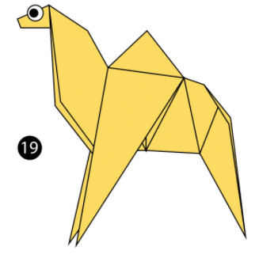
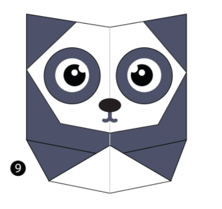

Origami Designs
About Us
Follow Us

Interesting facts about Camels
- Camels ears are furry
- Camels can mone easily across the sand because of their specially designed feet
- When they find water, they will drink as much as they can.

Interesting facts about Pandas
- Pandas reside in forests that are rich in coniferous leaves and dense under-stories of bamboo
- Pandas have a distinct black and white coat that is dense and thick to protect against cooler climates
- Their strong jaws and teeth help it to successfully chew tough bamboo, which comprises 99 percent of their diet.